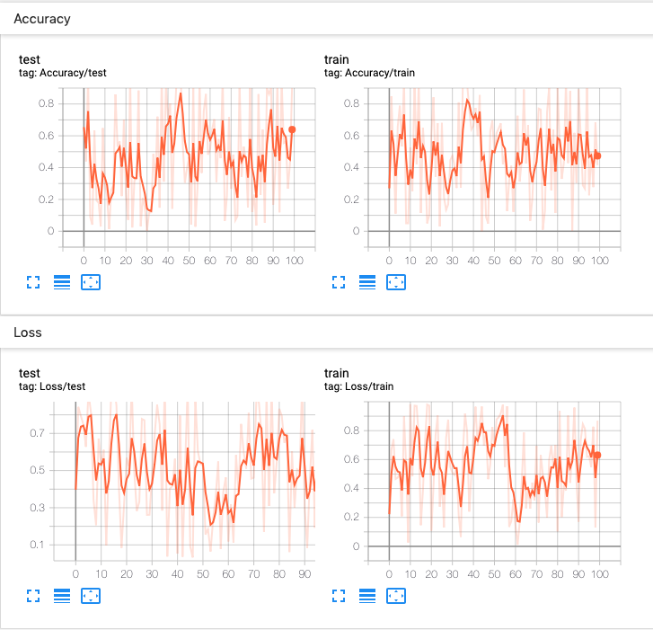
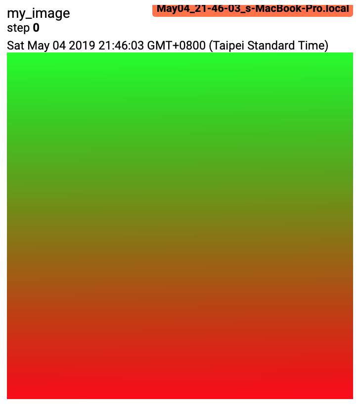
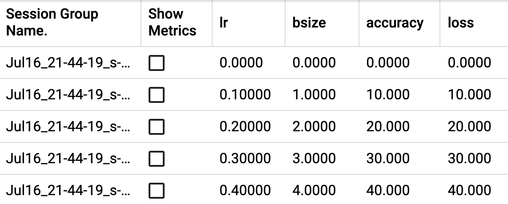

torch.utils.tensorboard¶
Before going further, more details on TensorBoard can be found at https://www.tensorflow.org/tensorboard/
Once you’ve installed TensorBoard, these utilities let you log PyTorch models and metrics into a directory for visualization within the TensorBoard UI. Scalars, images, histograms, graphs, and embedding visualizations are all supported for PyTorch models and tensors as well as Caffe2 nets and blobs.
The SummaryWriter class is your main entry to log data for consumption and visualization by TensorBoard. For example:
import torch
import torchvision
from torch.utils.tensorboard import SummaryWriter
from torchvision import datasets, transforms
# Writer will output to ./runs/ directory by default
writer = SummaryWriter()
transform = transforms.Compose([transforms.ToTensor(), transforms.Normalize((0.5,), (0.5,))])
trainset = datasets.MNIST('mnist_train', train=True, download=True, transform=transform)
trainloader = torch.utils.data.DataLoader(trainset, batch_size=64, shuffle=True)
model = torchvision.models.resnet50(False)
# Have ResNet model take in grayscale rather than RGB
model.conv1 = torch.nn.Conv2d(1, 64, kernel_size=7, stride=2, padding=3, bias=False)
images, labels = next(iter(trainloader))
grid = torchvision.utils.make_grid(images)
writer.add_image('images', grid, 0)
writer.add_graph(model, images)
writer.close()
This can then be visualized with TensorBoard, which should be installable and runnable with:
pip install tensorboard
tensorboard --logdir=runs
Lots of information can be logged for one experiment. To avoid cluttering the UI and have better result clustering, we can group plots by naming them hierarchically. For example, “Loss/train” and “Loss/test” will be grouped together, while “Accuracy/train” and “Accuracy/test” will be grouped separately in the TensorBoard interface.
from torch.utils.tensorboard import SummaryWriter
import numpy as np
writer = SummaryWriter()
for n_iter in range(100):
writer.add_scalar('Loss/train', np.random.random(), n_iter)
writer.add_scalar('Loss/test', np.random.random(), n_iter)
writer.add_scalar('Accuracy/train', np.random.random(), n_iter)
writer.add_scalar('Accuracy/test', np.random.random(), n_iter)
Expected result:
- class torch.utils.tensorboard.writer.SummaryWriter(log_dir=None, comment='', purge_step=None, max_queue=10, flush_secs=120, filename_suffix='')[source]¶
Writes entries directly to event files in the log_dir to be consumed by TensorBoard.
The SummaryWriter class provides a high-level API to create an event file in a given directory and add summaries and events to it. The class updates the file contents asynchronously. This allows a training program to call methods to add data to the file directly from the training loop, without slowing down training.
- __init__(log_dir=None, comment='', purge_step=None, max_queue=10, flush_secs=120, filename_suffix='')[source]¶
Creates a SummaryWriter that will write out events and summaries to the event file.
- Parameters
log_dir (str) – Save directory location. Default is runs/CURRENT_DATETIME_HOSTNAME, which changes after each run. Use hierarchical folder structure to compare between runs easily. e.g. pass in ‘runs/exp1’, ‘runs/exp2’, etc. for each new experiment to compare across them.
comment (str) – Comment log_dir suffix appended to the default
log_dir. Iflog_diris assigned, this argument has no effect.purge_step (int) – When logging crashes at step and restarts at step , any events whose global_step larger or equal to will be purged and hidden from TensorBoard. Note that crashed and resumed experiments should have the same
log_dir.max_queue (int) – Size of the queue for pending events and summaries before one of the ‘add’ calls forces a flush to disk. Default is ten items.
flush_secs (int) – How often, in seconds, to flush the pending events and summaries to disk. Default is every two minutes.
filename_suffix (str) – Suffix added to all event filenames in the log_dir directory. More details on filename construction in tensorboard.summary.writer.event_file_writer.EventFileWriter.
Examples:
from torch.utils.tensorboard import SummaryWriter # create a summary writer with automatically generated folder name. writer = SummaryWriter() # folder location: runs/May04_22-14-54_s-MacBook-Pro.local/ # create a summary writer using the specified folder name. writer = SummaryWriter("my_experiment") # folder location: my_experiment # create a summary writer with comment appended. writer = SummaryWriter(comment="LR_0.1_BATCH_16") # folder location: runs/May04_22-14-54_s-MacBook-Pro.localLR_0.1_BATCH_16/
- add_scalar(tag, scalar_value, global_step=None, walltime=None, new_style=False, double_precision=False)[source]¶
Add scalar data to summary.
- Parameters
tag (str) – Data identifier
scalar_value (float or string/blobname) – Value to save
global_step (int) – Global step value to record
walltime (float) – Optional override default walltime (time.time()) with seconds after epoch of event
new_style (boolean) – Whether to use new style (tensor field) or old style (simple_value field). New style could lead to faster data loading.
Examples:
from torch.utils.tensorboard import SummaryWriter writer = SummaryWriter() x = range(100) for i in x: writer.add_scalar('y=2x', i * 2, i) writer.close()
Expected result:

- add_scalars(main_tag, tag_scalar_dict, global_step=None, walltime=None)[source]¶
Adds many scalar data to summary.
- Parameters
Examples:
from torch.utils.tensorboard import SummaryWriter writer = SummaryWriter() r = 5 for i in range(100): writer.add_scalars('run_14h', {'xsinx':i*np.sin(i/r), 'xcosx':i*np.cos(i/r), 'tanx': np.tan(i/r)}, i) writer.close() # This call adds three values to the same scalar plot with the tag # 'run_14h' in TensorBoard's scalar section.
Expected result:

- add_histogram(tag, values, global_step=None, bins='tensorflow', walltime=None, max_bins=None)[source]¶
Add histogram to summary.
- Parameters
tag (str) – Data identifier
values (torch.Tensor, numpy.ndarray, or string/blobname) – Values to build histogram
global_step (int) – Global step value to record
bins (str) – One of {‘tensorflow’,’auto’, ‘fd’, …}. This determines how the bins are made. You can find other options in: https://docs.scipy.org/doc/numpy/reference/generated/numpy.histogram.html
walltime (float) – Optional override default walltime (time.time()) seconds after epoch of event
Examples:
from torch.utils.tensorboard import SummaryWriter import numpy as np writer = SummaryWriter() for i in range(10): x = np.random.random(1000) writer.add_histogram('distribution centers', x + i, i) writer.close()
Expected result:

- add_image(tag, img_tensor, global_step=None, walltime=None, dataformats='CHW')[source]¶
Add image data to summary.
Note that this requires the
pillowpackage.- Parameters
tag (str) – Data identifier
img_tensor (torch.Tensor, numpy.ndarray, or string/blobname) – Image data
global_step (int) – Global step value to record
walltime (float) – Optional override default walltime (time.time()) seconds after epoch of event
dataformats (str) – Image data format specification of the form CHW, HWC, HW, WH, etc.
- Shape:
img_tensor: Default is . You can use
torchvision.utils.make_grid()to convert a batch of tensor into 3xHxW format or calladd_imagesand let us do the job. Tensor with , , is also suitable as long as correspondingdataformatsargument is passed, e.g.CHW,HWC,HW.
Examples:
from torch.utils.tensorboard import SummaryWriter import numpy as np img = np.zeros((3, 100, 100)) img[0] = np.arange(0, 10000).reshape(100, 100) / 10000 img[1] = 1 - np.arange(0, 10000).reshape(100, 100) / 10000 img_HWC = np.zeros((100, 100, 3)) img_HWC[:, :, 0] = np.arange(0, 10000).reshape(100, 100) / 10000 img_HWC[:, :, 1] = 1 - np.arange(0, 10000).reshape(100, 100) / 10000 writer = SummaryWriter() writer.add_image('my_image', img, 0) # If you have non-default dimension setting, set the dataformats argument. writer.add_image('my_image_HWC', img_HWC, 0, dataformats='HWC') writer.close()
Expected result:

- add_images(tag, img_tensor, global_step=None, walltime=None, dataformats='NCHW')[source]¶
Add batched image data to summary.
Note that this requires the
pillowpackage.- Parameters
tag (str) – Data identifier
img_tensor (torch.Tensor, numpy.ndarray, or string/blobname) – Image data
global_step (int) – Global step value to record
walltime (float) – Optional override default walltime (time.time()) seconds after epoch of event
dataformats (str) – Image data format specification of the form NCHW, NHWC, CHW, HWC, HW, WH, etc.
- Shape:
img_tensor: Default is . If
dataformatsis specified, other shape will be accepted. e.g. NCHW or NHWC.
Examples:
from torch.utils.tensorboard import SummaryWriter import numpy as np img_batch = np.zeros((16, 3, 100, 100)) for i in range(16): img_batch[i, 0] = np.arange(0, 10000).reshape(100, 100) / 10000 / 16 * i img_batch[i, 1] = (1 - np.arange(0, 10000).reshape(100, 100) / 10000) / 16 * i writer = SummaryWriter() writer.add_images('my_image_batch', img_batch, 0) writer.close()
Expected result:

- add_figure(tag, figure, global_step=None, close=True, walltime=None)[source]¶
Render matplotlib figure into an image and add it to summary.
Note that this requires the
matplotlibpackage.- Parameters
- add_video(tag, vid_tensor, global_step=None, fps=4, walltime=None)[source]¶
Add video data to summary.
Note that this requires the
moviepypackage.- Parameters
- Shape:
vid_tensor: . The values should lie in [0, 255] for type uint8 or [0, 1] for type float.
- add_audio(tag, snd_tensor, global_step=None, sample_rate=44100, walltime=None)[source]¶
Add audio data to summary.
- Parameters
tag (str) – Data identifier
snd_tensor (torch.Tensor) – Sound data
global_step (int) – Global step value to record
sample_rate (int) – sample rate in Hz
walltime (float) – Optional override default walltime (time.time()) seconds after epoch of event
- Shape:
snd_tensor: . The values should lie between [-1, 1].
- add_text(tag, text_string, global_step=None, walltime=None)[source]¶
Add text data to summary.
- Parameters
Examples:
writer.add_text('lstm', 'This is an lstm', 0) writer.add_text('rnn', 'This is an rnn', 10)
- add_graph(model, input_to_model=None, verbose=False, use_strict_trace=True)[source]¶
Add graph data to summary.
- Parameters
model (torch.nn.Module) – Model to draw.
input_to_model (torch.Tensor or list of torch.Tensor) – A variable or a tuple of variables to be fed.
verbose (bool) – Whether to print graph structure in console.
use_strict_trace (bool) – Whether to pass keyword argument strict to torch.jit.trace. Pass False when you want the tracer to record your mutable container types (list, dict)
- add_embedding(mat, metadata=None, label_img=None, global_step=None, tag='default', metadata_header=None)[source]¶
Add embedding projector data to summary.
- Parameters
mat (torch.Tensor or numpy.ndarray) – A matrix which each row is the feature vector of the data point
metadata (list) – A list of labels, each element will be convert to string
label_img (torch.Tensor) – Images correspond to each data point
global_step (int) – Global step value to record
tag (str) – Name for the embedding
- Shape:
mat: , where N is number of data and D is feature dimension
label_img:
Examples:
import keyword import torch meta = [] while len(meta)<100: meta = meta+keyword.kwlist # get some strings meta = meta[:100] for i, v in enumerate(meta): meta[i] = v+str(i) label_img = torch.rand(100, 3, 10, 32) for i in range(100): label_img[i]*=i/100.0 writer.add_embedding(torch.randn(100, 5), metadata=meta, label_img=label_img) writer.add_embedding(torch.randn(100, 5), label_img=label_img) writer.add_embedding(torch.randn(100, 5), metadata=meta)
- add_pr_curve(tag, labels, predictions, global_step=None, num_thresholds=127, weights=None, walltime=None)[source]¶
Adds precision recall curve. Plotting a precision-recall curve lets you understand your model’s performance under different threshold settings. With this function, you provide the ground truth labeling (T/F) and prediction confidence (usually the output of your model) for each target. The TensorBoard UI will let you choose the threshold interactively.
- Parameters
tag (str) – Data identifier
labels (torch.Tensor, numpy.ndarray, or string/blobname) – Ground truth data. Binary label for each element.
predictions (torch.Tensor, numpy.ndarray, or string/blobname) – The probability that an element be classified as true. Value should be in [0, 1]
global_step (int) – Global step value to record
num_thresholds (int) – Number of thresholds used to draw the curve.
walltime (float) – Optional override default walltime (time.time()) seconds after epoch of event
Examples:
from torch.utils.tensorboard import SummaryWriter import numpy as np labels = np.random.randint(2, size=100) # binary label predictions = np.random.rand(100) writer = SummaryWriter() writer.add_pr_curve('pr_curve', labels, predictions, 0) writer.close()
- add_custom_scalars(layout)[source]¶
Create special chart by collecting charts tags in ‘scalars’. Note that this function can only be called once for each SummaryWriter() object. Because it only provides metadata to tensorboard, the function can be called before or after the training loop.
- Parameters
layout (dict) – {categoryName: charts}, where charts is also a dictionary {chartName: ListOfProperties}. The first element in ListOfProperties is the chart’s type (one of Multiline or Margin) and the second element should be a list containing the tags you have used in add_scalar function, which will be collected into the new chart.
Examples:
layout = {'Taiwan':{'twse':['Multiline',['twse/0050', 'twse/2330']]}, 'USA':{ 'dow':['Margin', ['dow/aaa', 'dow/bbb', 'dow/ccc']], 'nasdaq':['Margin', ['nasdaq/aaa', 'nasdaq/bbb', 'nasdaq/ccc']]}} writer.add_custom_scalars(layout)
- add_mesh(tag, vertices, colors=None, faces=None, config_dict=None, global_step=None, walltime=None)[source]¶
Add meshes or 3D point clouds to TensorBoard. The visualization is based on Three.js, so it allows users to interact with the rendered object. Besides the basic definitions such as vertices, faces, users can further provide camera parameter, lighting condition, etc. Please check https://threejs.org/docs/index.html#manual/en/introduction/Creating-a-scene for advanced usage.
- Parameters
tag (str) – Data identifier
vertices (torch.Tensor) – List of the 3D coordinates of vertices.
colors (torch.Tensor) – Colors for each vertex
faces (torch.Tensor) – Indices of vertices within each triangle. (Optional)
config_dict – Dictionary with ThreeJS classes names and configuration.
global_step (int) – Global step value to record
walltime (float) – Optional override default walltime (time.time()) seconds after epoch of event
- Shape:
vertices: . (batch, number_of_vertices, channels)
colors: . The values should lie in [0, 255] for type uint8 or [0, 1] for type float.
faces: . The values should lie in [0, number_of_vertices] for type uint8.
Examples:
from torch.utils.tensorboard import SummaryWriter vertices_tensor = torch.as_tensor([ [1, 1, 1], [-1, -1, 1], [1, -1, -1], [-1, 1, -1], ], dtype=torch.float).unsqueeze(0) colors_tensor = torch.as_tensor([ [255, 0, 0], [0, 255, 0], [0, 0, 255], [255, 0, 255], ], dtype=torch.int).unsqueeze(0) faces_tensor = torch.as_tensor([ [0, 2, 3], [0, 3, 1], [0, 1, 2], [1, 3, 2], ], dtype=torch.int).unsqueeze(0) writer = SummaryWriter() writer.add_mesh('my_mesh', vertices=vertices_tensor, colors=colors_tensor, faces=faces_tensor) writer.close()
- add_hparams(hparam_dict, metric_dict, hparam_domain_discrete=None, run_name=None)[source]¶
Add a set of hyperparameters to be compared in TensorBoard.
- Parameters
hparam_dict (dict) – Each key-value pair in the dictionary is the name of the hyper parameter and it’s corresponding value. The type of the value can be one of bool, string, float, int, or None.
metric_dict (dict) – Each key-value pair in the dictionary is the name of the metric and it’s corresponding value. Note that the key used here should be unique in the tensorboard record. Otherwise the value you added by
add_scalarwill be displayed in hparam plugin. In most cases, this is unwanted.hparam_domain_discrete – (Optional[Dict[str, List[Any]]]) A dictionary that contains names of the hyperparameters and all discrete values they can hold
run_name (str) – Name of the run, to be included as part of the logdir. If unspecified, will use current timestamp.
Examples:
from torch.utils.tensorboard import SummaryWriter with SummaryWriter() as w: for i in range(5): w.add_hparams({'lr': 0.1*i, 'bsize': i}, {'hparam/accuracy': 10*i, 'hparam/loss': 10*i})
Expected result:


{kind=link}
{kind=link}
{kind=link}